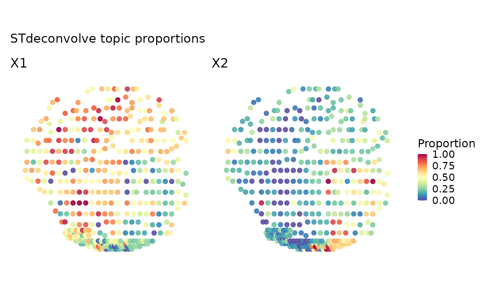
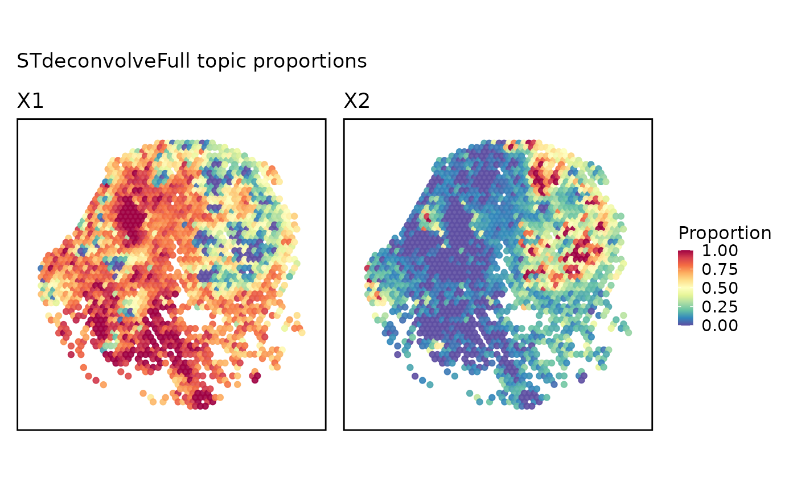

Plot stored topic proportions without rerunning the optional backend. Multi-topic point maps use one shared proportion scale and reserve title space above the automatic layout.
Usage
STdeconvolvePlot(
srt,
tool_name = "STdeconvolve",
topics = NULL,
prefix = NULL,
plot_type = c("point", "pie"),
combine = TRUE,
nrow = NULL,
ncol = NULL,
byrow = TRUE,
...
)Arguments
- srt
A
Seuratobject.- tool_name
Result key written to
srt@toolsbyRunSTdeconvolve().- topics
Topic names, topic numbers, or metadata columns to plot. If
NULL, all topics in the stored result are used.- prefix
Metadata prefix used by
RunSTdeconvolve(). IfNULL, the prefix is read from the stored result.- plot_type
"point"or"pie". Pie uses numericgroup.bycolumns,values, or"<prefix>_prop_*"/"<prefix>_frac_*"whengroup.byis"<prefix>_dominant_type".- combine
Whether to combine point plots. If
FALSE, a named list of plots is returned.- nrow, ncol, byrow
Point-plot layout controls. When both
nrowandncolareNULL, a near-square layout with at most three columns is used.- ...
Additional arguments passed to
SpatialSpotPlot().
Examples
thisutils::check_r("JEFworks-Lab/STdeconvolve", verbose = FALSE)
data(visium_human_pancreas_sub)
spatial <- RunSTdeconvolve(
visium_human_pancreas_sub,
assay = "Spatial",
features = rownames(visium_human_pancreas_sub)[1:300],
k = 3,
prefix = "STFull",
tool_name = "STdeconvolveFull",
verbose = FALSE
)
#> Removing 0 genes present in 100% or more of pixels...
#> 300 genes remaining...
#> Removing 0 genes present in 5% or less of pixels...
#> 300 genes remaining...
#> Restricting to overdispersed genes with alpha = 0.05...
#> Calculating variance fit ...
#> Using gam with k=5...
#> 68 overdispersed genes ...
#> Using top 1000 overdispersed genes.
#> number of top overdispersed genes available: 68
#> Time to fit LDA models was 0.07 mins
#> Computing perplexity for each fitted model...
#> Time to compute perplexities was 0.03 mins
#> Getting predicted cell-types at low proportions...
#> Time to compute cell-types at low proportions was 0 mins
#> Plotting...
#> Warning: Ignoring unknown parameters: `linewidth`
#> Warning: Ignoring unknown parameters: `linewidth`
#> `geom_line()`: Each group consists of only one observation.
#> ℹ Do you need to adjust the group aesthetic?
#> `geom_line()`: Each group consists of only one observation.
#> ℹ Do you need to adjust the group aesthetic?

#> Filtering out cell-types in pixels that contribute less than 0.05 of the pixel proportion.
#> Warning: no non-missing arguments to max; returning -Inf
#> Warning: no non-missing arguments to max; returning -Inf
#> Warning: no non-missing arguments to max; returning -Inf
STdeconvolvePlot(
spatial,
tool_name = "STdeconvolveFull",
topics = 1:2,
overlay_image = FALSE,
coord.cols = c("x", "y")
)
